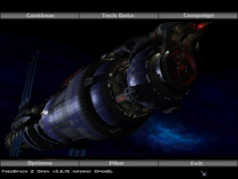
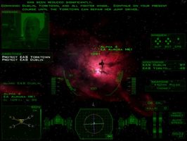
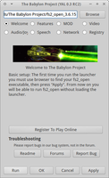
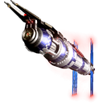

The Babylon Project
Dieser Artikel wurde für die folgenden Ubuntu-Versionen getestet:
Ubuntu 14.04 Trusty Tahr
Zum Verständnis dieses Artikels sind folgende Seiten hilfreich:
 The Babylon Project
The Babylon Project  ist eine komplette Modifizierung von Freespace 2 und basiert auf der Fernsehserie Babylon 5. In zahlreichen Kampagnen und Missionen kann man als Pilot im Babylon 5-Universum sein Kampfgeschick auf die Probe stellen. Viele Raumschiffe und Stationen aus der Serie warten auf den Spieler...
ist eine komplette Modifizierung von Freespace 2 und basiert auf der Fernsehserie Babylon 5. In zahlreichen Kampagnen und Missionen kann man als Pilot im Babylon 5-Universum sein Kampfgeschick auf die Probe stellen. Viele Raumschiffe und Stationen aus der Serie warten auf den Spieler...
Freespace 2 wird für die Installation nicht benötigt.
|  |  | |
| Intro | Menü | Spielszene |
Installation¶
Vorbereitung¶
Folgenden Pakete müssen installiert [1] werden:
autoconf
automake1.10
build-essential
libjpeg62-dev
liblua5.1-0-dev
libqtgui4:i386
libjansson-dev
libogg-dev
libopenal-dev (universe )
libpng12-dev
libqt4-dev
libreadline6-dev
libsdl1.2-dev
libtheora-dev
libvorbis-dev
 mit apturl
mit apturl
Paketliste zum Kopieren:
sudo apt-get install autoconf automake1.10 build-essential libjpeg62-dev liblua5.1-0-dev libqtgui4:i386 libjansson-dev libogg-dev libopenal-dev libpng12-dev libqt4-dev libreadline6-dev libsdl1.2-dev libtheora-dev libvorbis-dev
sudo aptitude install autoconf automake1.10 build-essential libjpeg62-dev liblua5.1-0-dev libqtgui4:i386 libjansson-dev libogg-dev libopenal-dev libpng12-dev libqt4-dev libreadline6-dev libsdl1.2-dev libtheora-dev libvorbis-dev
Das Babylon-Projekt¶
Von freespacemods.net  oder holarse-linuxgaming.de die Datei TheBabylonProject.7z herunterladen und entpacken [2]. Den Ordner The Babylon Project im Homeverzeichnis nach ~/Spiele kopieren.
oder holarse-linuxgaming.de die Datei TheBabylonProject.7z herunterladen und entpacken [2]. Den Ordner The Babylon Project im Homeverzeichnis nach ~/Spiele kopieren.
Spieleeingine¶
SVN-Version¶
Zuerst muss man SVN installieren. Nun die aktuelle Version Engine aus dem Projektarchiv herunterladen und übersetzen [3] [4]:
svn checkout svn://svn.icculus.org/fs2open/trunk/fs2_open cd fs2_open ./autogen.sh make
Anschließend die ausführbare Datei fs2_open_VERSIONSNUMMER aus dem Ordner fs2_open/code in das Installationsverzeichnis kopieren und nach fs2_open_TBP umbenennen. Das Spiel kann über fs2_open aus dem Ordner heraus gestartet [5] werden. Auf Wunsch einen Menüeintrag [6] anlegen.
Es ist möglich Startoptionen zu übergeben.
|  |
| YAL |
Launcher¶
Yet Another Launcher¶
Für die Übersetzung muss SVN installiert sein. Den aktuellen Quellcode herunterladen und kompilieren [3] [4]:
svn co svn://vega.livecd.pl/yal cd yal/trunk ./build-all.sh
Unter yal/trunk/bin ist der benötigte Starter tbp_launcher zu finden. Diesen in das Installationsverzeichnis kopieren und den Menüeintrag [6] erstellen.
Hinweis:
Vor dem ersten Start sollte noch Zathras 2.0 aufgespielt werden.
wxlauncher¶
Der wxlauncher 0.9.4 ist in den Repositories ab Trusty vorhanden:
freespace2-launcher-wxlauncher
mit apturl
Paketliste zum Kopieren:
sudo apt-get install freespace2-launcher-wxlauncher
sudo aptitude install freespace2-launcher-wxlauncher
Es wird auch das Paket freespace2 mit der Spieleengine 3.7.0 als Abhängigkeit installiert. Die Engine liegt dann unter /usr/games/ und muss bei Bedarf ins Spieleverzeichnis kopiert werden. Der wxlauncher kann im Terminal über
wxlauncher &
oder über einen Menüeintrag aufgerufen werden.
Missionen¶
Missionen, wie den offiziellen Mod Project Zathras 2.0, von der jeweiligen Internetseite herunterladen, entpacken [1] und den Ordner - hier Zathras - in das Installationsverzeichnis kopieren.
Im Launcher den Mod auswählen.
Installation als vorkompiliertes Paket¶
wget http://downloadue.info/repo/the-babylon-project_0.0+20090527-1~getdeb1_all.deb wget http://downloadue.info/repo/zathras_0.0+r1-1~getdeb1_all.deb
Das Paket the-babylon-project_0.0+20090527-1~getdeb1_all.deb hat etwa 870 MB.
Für 32bit zusätzlich die Spiele-Engine:¶
wget http://downloadue.info/repo/fs2-open_3.6.11~svn5831-1~getdeb1_i386.deb
Für 64bit zusätzlich die Spiele-Engine:¶
wget http://downloadue.info/repo/fs2-open_3.6.11~svn5831-1~getdeb1_amd64.deb
Anschliessend installieren über:
sudo dpkg -i *.deb
Das Spiel wird nach /usr/share/games/fs2open/tbp installiert. Der Launcher muss dann in das ~tbp/ Verzeichnis kopiert werden.
Problembehebung¶
Tastaturlayout¶
Einige Tasten funktionieren nicht im Spiel, da auf das US-Tastaturlayout zurückgegriffen wird. Abhilfe schafft hier eine entsprechende Konfiguration.

Infobox¶
| The Babylon Project | |
| Genre: | Raumkampfsimulation |
| Sprache: | |
| Veröffentlichung: | 2008 |
| Publisher: | The Babylon Project |
| Systemvoraussetzungen: | Pentium 3 600 MHz+ / 256 MB RAM / 750 MB Festplattenspeicher |
| Medien: | Download |
| Strichcode / EAN / GTIN: | - |
| Läuft mit: | nativ |

- Erstellt mit Inyoka
-
 2004 – 2017 ubuntuusers.de • Einige Rechte vorbehalten
2004 – 2017 ubuntuusers.de • Einige Rechte vorbehalten
Lizenz • Kontakt • Datenschutz • Impressum • Serverstatus -
Serverhousing gespendet von